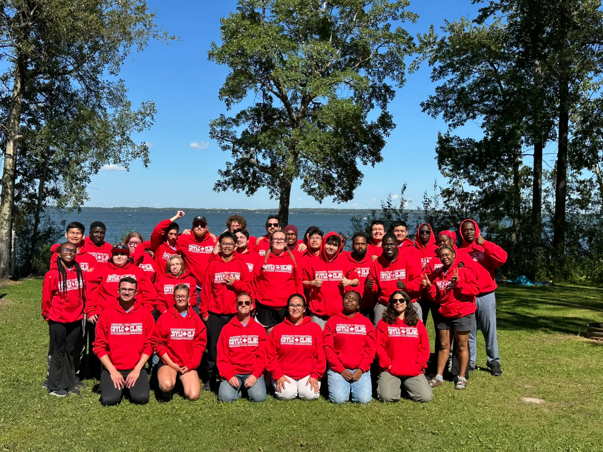

Where leadership
and friendship meet.
Our leadership camp creates space for Deaf youth to learn together, build confidence, and make friendships beyond their home communities.
Explore the camp websiteBrowse our memoriesCDYLC

Our leadership camp creates space for Deaf youth to learn together, build confidence, and make friendships beyond their home communities.
Explore the camp websiteBrowse our memories